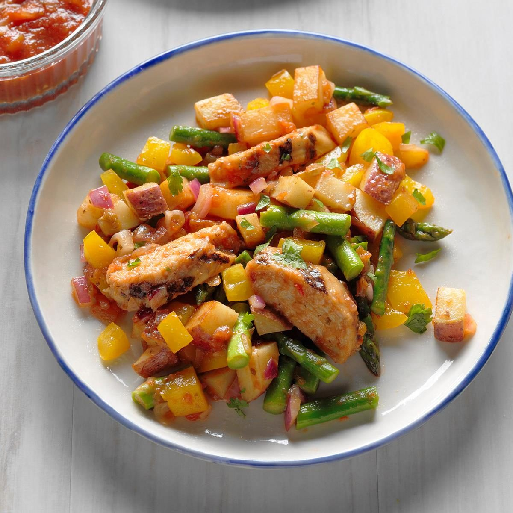

Mango Salsa Chicken
What is Mango Salsa Chicken?
Mango Salsa Chicken is a healthy and flavorful dish that can be prepared quickly with just a few simple ingredients. The dish is a perfect blend of sweet and savory flavors, with the juicy mango salsa adding a refreshing twist to the grilled chicken.
Ingredients for Chicken
4 large boneless skinless chicken breasts - pounded to even ¾ inch thickness or less
2 tablespoons olive oil
Salt and pepper - to taste
1 teaspoon cumin
1 teaspoon chili powder
1 teaspoon garlic powder
½ teaspoon Italian blend seasoning - (or make your own with dried basil, oregano, thyme, and rosemary)
Instructions / How to Cook
1. Drizzle chicken with oil, then season with salt and pepper to taste.
2. Stir together cumin, chili powder, garlic powder, and Italian seasonings.
3. Season chicken with spices.
4. Grill chicken over medium-high heat, or bake at 375 degrees for 20 minutes or until cooked through.
5. Serve immediately with mango salsa.
Ingredients for Mango Salsa
1 large mango, peeled and diced
1/4 cup diced red onion
1/4 cup chopped fresh cilantro
1 jalapeño pepper, seeded and minced
1 tablespoon lime juice
Salt and pepper to taste
Instructions / How to Cook
1. In a medium bowl, combine mango, red onion, cilantro, jalapeño pepper, lime juice, salt, and pepper.
2. Mix well and serve over the chicken.